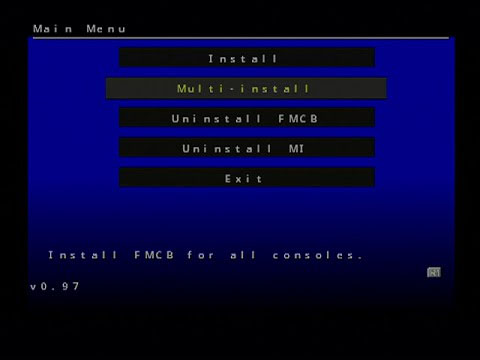

PS2 Formatear Memory Card PS2

Para esta Guia
Requisitos para este tutorial
- USB en formato FAT32
- Consola PS2 con Chip Matrix, FMCB o Funtuna
Para Empezar este Tutorial
- Para esto si no tenemos podemos pasar el archivo de FMCB a nuestro USB
- Una vez descargado nuestro archivo FMCB lo pasamos a la rais de nuestro USB ej:
?:nombrede la carpeta donde le símbolo ? representa la letra de nuestra unidad - Conectamos nuestras memory card a nuestra consola en este orden
- Después nos vamos a uLaunchELF en nuestra consola
- Le damas al

- Y después nos vamos a la ruta: Ej
MASS:/FMCB v1.966 Install (2019-04-13)/ - Y buscamos el archivo .elf ej: FMCBInstaller.elf
- Una vez dentro del programa
- Dentro del programa vamos a 
- Presionamos
 y buscamos el mene donde dice Formatear T. M.
y buscamos el mene donde dice Formatear T. M. - Dentro del menú de formatear seleccionamos la Ranura 2 (la memoria a eliminar todo su contenido)
- Una vez seguros de la memoria a formatear le damos si y esperamos
- Y estaría lista para usar como nueva sin datos.

×